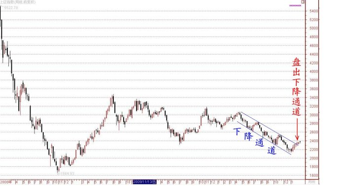

第123篇•对当前盘面的一些看法
谷为陵
这一段时间因为一直在忙一个项目，根本脱不开身，所以没有时间更新博客，对各位网友欠账太多，只好留待日后逐渐弥补吧。今天我忙里偷闲，谈一谈对近期大盘的一些看法。
第一，先谈谈大盘。自今年1月6日以来，上证指数一直处于一个缓慢的上升通道之中，该上升通道已经盘出了自去年4月以来的下降通道的上轨，如下图所示：

上证指数盘出下降通道，这意味着什么呢？所谓通道，是指价格运行的一种非常明显的趋势。具体来说，若能够将某一段时间内的几个较大的价格波段的最低点和最高点分别连成两条直线，这两条直线所围成的空间就形成了一个运行通道。通道有两种分类方法：一是按照涨跌情况划分，可分为上升通道、平行通道、下降通道三种；二是按照通道的张口情况划分，可将通道划分为扩张（喇叭）型通道、平行型通道和收窄型（楔形或者锥子型）通道三种。
一般来说，平行型通道对于趋势的判断最有参考意义。根据以上的通道划分方法，可知平行型通道有三种：上升平行型通道、横盘平行型通道、下降平行型通道。自去年4月至今年1月初，上证指数一直在一个较为明显的下降平行型通道中运行，目前，上证指数已经盘出下降通道，这说明上证指数已经摆脱了以上的下降通道，开始了一个新的运行趋势。一个新的运行趋势是否意味着大盘就此一路上涨呢？不能这样简单地看。我说新的运行趋势是仅仅针对去年4月至今年1月初的那个下降通道而言的，上证指数不再属于那个下降通道了。那么，后市会如何发展呢？
要回答这个问题，我就要谈今天的第二个问题，关于市场人气的问题。我们每天看盘，到底在看什么？就是在看市场的人气。若连这个道理都不懂，那么，看盘就白看了。市场人气是什么？就是资金流的动向。决定股市和股价短期内运动方向的力量只有一个，那就是资金流的运动方向：当资金流不断进入股市，则股市必涨；当资金流逃离股市，则股市必跌。市场人气可以有多种体现方式：如，大盘的成交量，成交量越大，市场人气越旺；如，龙头股和龙头板块的涨幅，涨幅越大，市场人气越旺；再如，市场对于利好信息的反应强度，反应强度越大，市场人气越旺。从目前的盘面看，股市的成交量并没有明显放大，且主流热点缺乏，没有持续热点，导致龙头股和龙头板块的涨幅并不大，比如，前一阶段的煤炭股和有色股，现在又进入了盘整。从这两点看，股市并非出于强势。言外之意是，股市要大幅上涨很困难，或者说根本不太可能。除非股市能够出现持续放量，并形成主流热点。至于有无这种可能性，我们就需要通过看盘进行观察。
我要谈的第三个问题是熊市牛股的问题。虽然现在股市还很弱，但有一些股票却已经显露出牛股或者说未来大牛股的初步迹象。我无意向各位网友推荐股票，我只是通过个股分析来阐述我的一些看盘和分析方法。至少到现在为止，我比较看好两只股票：一只是海信电器，一只是乐视网。
关于海信电器，我曾在1月23日的《第109篇•最近盘面特征分析》中重点提到过，该股这几天已经开始发力上攻，目前该股股价还处于这一轮的主升浪之中。
乐视网因受其高清机正式商业化的利好刺激，使得该股股价在这几天股价放量上涨，一举突破一年的盘整平台，创出历史新高，技术意义非常重大。该股的走势极为符合威廉·欧奈尔（畅销书《笑傲股市》作者）的大牛股的主升浪启动模式，该模式的核心要点就是“股价新高+新产品”，而乐视网正是如此。
我只是抛砖引玉，有兴趣的网友可以对于这两只股票做进一步的研究。今天就写到这里吧。